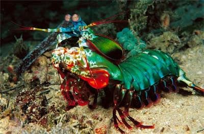

Medindo cerca de 18 cm e habitando águas claras e rasas dos recifes com o nome científico Odontodactylus Scyllarus, esse animal de colorido intenso é bastante apreciado no Aquarismo. Possuindo 08 fotorreceptores para distinção de cores (humanos possuem 03), conseguem detectar ondas ultravioleta e milhares de gradações (até 16 cores primárias). Com um mecanismo de polarização visual complexo e visão em 360 graus, são capazes de determinar profundidade e localização de objetos em três ângulos.
Reino
Filo
Subfilo
Classe
Subclasse
Ordem
Animalia
Arthorpoda
Crustacea
Malacostraca
Hoplocarida
Stomatopoda
Os Estomatópodes são grandes predadores!
Os estomatópodes são predadoresativos que caçam presas com o auxílio de um sentido de visão muito apurado e capaz de interpretar polarização no espectro ultravioleta e infravermelho. Apresentam uma grande variação de tamanho, que pode ir de poucos milímetros até aproximadamente 40 cm nas espécies maiores. Eles vivem em fundo consolidado, lodoso ou ainda arenoso, onde cavam seus buracos ou aproveitam-se dos orifícios deixados por outros animais para neles se instalar. São animais exclusivamente carnívoros, alimentando-se de camarões, caranguejos, moluscos, peixese até mesmo outros da mesma ordem. O segundo par de patas, muito desenvolvido, é usado tanto para atacar a presa como para se defender.

Enxergam ampla gama de cores
A maioria das pessoas tem três tipos de células de detecção de luz, ou fotorreceptores, que são sensíveis à luz vermelha, verde e azul. Mas o camarão mantis tem de 12 a 16 fotorreceptores diferentes em sua banda média. A maioria das pessoas presume que elas devem ser realmente boas em ver uma ampla gama de cores - uma “ bomba termonuclear de luz e beleza ”, como disse o Oatmeal. Mas no ano passado, Hanna Thoen da Universidade de Queensland descobriu que eles são muito piores em discriminar cores, eles são muito piores em discriminar cores, eles são muito piores em discriminar cores, eles são muito pioresao discriminar cores, eles são muito piores em discriminar cores do que a maioria dos outros animais! Eles parecem usar seus mais de uma dúzia de receptores para reconhecer cores de uma maneira única que é muito diferente de outros animais, mas estranhamente semelhante a alguns satélites.